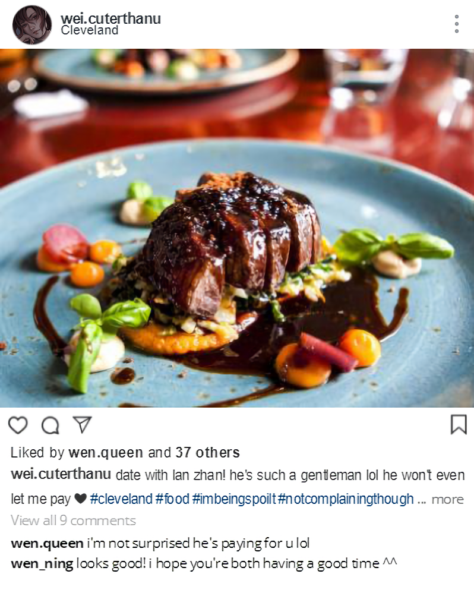

🡰 XiChen
8:13 AM
- x -
Wei Ying is still asleep. Wangji is not surprised, considering that Wei Ying does not normally wake up until eleven AM at the earliest. For some reason, he slept later last night, texting away on his phone and snickering at whatever he was discussing with his friend. Wangji had tried to look at what their conversation was about, but Wei Ying proceeded to roll away from him with a faint blush on his face. It was only hours later that Wei Ying yawned and shuffled closer to him, falling asleep within seconds.
It has only just turned nine now. Wangji doubts Wei Ying will wake up any time soon. He looks down at him currently curled up against his chest; Wei Ying's hair is covering half his face and Wangji suspects he is drooling all over him again. After the first night here, Wei Ying spent the next morning repeatedly apologising for drooling on Wangji; he said it was a bad habit and he could not help it. Wangji reassured him it was fine. Amusing, even.
He remains there, his eyes roaming all over Wei Ying's face. How odd it is that, before he met Wei Ying again, Wangji was convinced he had forgotten what he looked like. Ever the artist, his brother once tried to paint Wei Ying for Wangji in a futile attempt to comfort him. Although his brother's artistic ability was incredible indeed, Wangji did not think the brush strokes compared to the real thing—of course it didn't. The oils Xichen used were vibrant, but not as vibrant as Wei Ying's smile.
Now, as Wangji gazes down at the slumbering man beside him, he engraves his face back into his memory; the gentle slope of his nose, how his bottom lip is fuller than his top, the thickness of his eyelashes and the way they cast shadows on his cheeks.
Gently, Wangji brushes aside the locks of hair that tickle Wei Ying's face. For a brief second, Wei Ying's nose twitches. He grumbles slightly and then wriggles closer to Wangji. The frown on his face disappears and he is back to snoring.
Wangji feels a warmth inside of him blossoming. He continues to stroke Wei Ying's hair, allowing his thoughts to wander to anything, anywhere. At this moment, he is content. At peace. He can think back to the eternity he has waited and none of it will matter, not when Wei Ying is here with him now.
But will he stay?
His hand stills.
That is right. He has an eternity and Wei Ying will only have several decades. There is nothing he can do to avoid this.
The warmth inside Wangji turns into icicles. He takes a long, deep breath and lets the seconds pass by until his thoughts calm again. He cannot be greedy. It is enough he has Wei Ying at this moment. For now.
Even as he desperately repeats this, he cannot ignore the fear gnawing inside him that he will lose Wei Ying again.
No.
Wangji inhales again. Inhale, exhale. Inhale. He tucks Wei Ying's hair behind his ear and looks up towards the ceiling. He must not waste the present by focusing on the future. He will worry about such matters when the time comes. For now... For now, he has Wei Ying.
For now, he has a date with Wei Ying.
His lips twitch at that. What he feels for Wei Ying is indescribable; most of the time, he cannot even understand it, let alone put it into words. A date. It sounds so trivial, so human.
Wangji has never bothered with anything of the sort. When his brother was still the sect leader of Gusu, the elders hounded him to find a wife. That eventually stopped when Xichen achieved immortality. He was fine with being by himself—or rather, he feared having to be with someone else.
Regardless, he is aware Xichen has more experience in dating than Wangji. Many believe the assumption that his brother is the epitome of benevolence and self control, but no—Xichen can easily fall victim to his own emotions and desires. The very reason why Xichen was so adamant to travel by himself, rather than stay with Wangji for most of the centuries they have lived, is because of this. Wangji knows his brother tried to seek out what it meant to live, or at least why they were still alive.
Wangji does not think he has ever found it. Xichen always came back in the end, still faking his smiles, still tired of life as Wangji was.
He doubts Xichen has been on any dates recently, but he will still know much more than Wangji does. If there is anyone who can give him advice, it is his brother. After all, his brother is more enthusiastic when it comes to blending in with humanity. He will actually try to adapt to their strange technologies and inventions, whereas Wangji does not see the point in doing so.
His brother can definitely help him in preparing for this date.
He stirs to the side, reaching for his phone.
Wangji waits for his brother, listening to Wei Ying snoring away beside him. Back when Wei Ying was still the Patriarch, he recalls they spent a day together in Yiling. Could that have been considered a date? Perhaps not. Wei Ying did not have any feelings for him then... but who is he to say that he has feelings for Wangji even now? It is impossible to tell what goes on inside Wei Ying's mind.
His phone vibrates.
Hmm. It seems that, by today's standard, he is doing as he should be when it comes to courting. That is comforting then. While Wei Ying seldom voices any complaints, Wangji worries he will eventually drive him away with his lack of knowledge on modern society.
Wangji blinks. That... That is unexpected. His gaze flickers back to Wei Ying. His lips are parted slightly and he has drooled a small patch onto WangJi's shirt. He would like to kiss Wei Ying, but why is there a specific time one must kiss someone in a date?
He is not sure how to respond to that. He is not sure he wants to. For too long, he stares at the screen, reading the text over and over again. It has been maddening enough having to sleep beside Wei Ying every night. He... He will not think on this. He cannot afford to let his self control slip.
Wangji remembers Wei Ying once mentioned he has been with other people before. The thought fills him with bitterness, even more so when he starts thinking about how that most likely involves sex. Wei Ying is very attractive and charming; in the past, Wangji has not been the only one who has admired him.
He grips his phone tighter and forces the thoughts out of his mind. Wei Ying is an adult capable of doing whatever he wants with his body. Wangji has no rights to feel jealous or possessive.
Asking his brother for advice is not as successful as Wangji expected, but it is not Xichen's fault. Modern society's strange methods on courting is merely not something Wangji would like to partake in. He pushed Wei Ying away before, back when he still smiled like the sun and he had no care in the world. Wangji has lived every day of his long, long life regretting those days.
He reaches for the bedside table again, placing his phone back where it was. Unfortunately, his movements jostle Wei Ying awake. He whines quietly, peeking open one eye.
“Good... morning...” He yawns. His eyelids are already drooping close again. “What... What time is it...?”
“Nine.”
“Huh... Still early... More sleep for me...”
Wei Ying settles back onto his chest, using him as a human pillow as he has done so for all these nights. He mumbles something, patting on Wangji's shoulder.
And then he sits up. His eyes are suddenly wide.
“Ah, shit. I've drooled all over you again,” Wei Ying says. He pulls at his sleeve and tries to wipe the wet patch on Wangji's shirt. “Lan Zhan, why don't you just push me off whenever I start drooling? This is so embarrassing.”
All of the tension Wangji felt this morning relaxes away at the sight of Wei Ying frantically trying to wipe his shirt. He stills Wei Ying's wrist, shaking his head.
“It is fine,” he says.
There is a slight flush on Wei Ying's cheeks but he shrugs and pulls his hand away, sitting back.
“Have you been awake for long?”
Wangji shakes his head again, regardless that he has been awake for three hours now. He is not sure what Wei Ying will think though; if he finds out Wangji has done nothing but admire him for all of that time.
Wei Ying stretches and yawns for the second time. He spends a few more seconds blinking into the distance before swinging his legs off the bed. Wangji watches him, not expecting Wei Ying to leave the bed so early. There are still signs of drowsiness in his eyes as he runs his fingers through his hair, trying to comb through its tangles.
“How about we visit Jiejie first and then have our date after?” he asks. “Does that sound good?”
Wangji nods. Wei Ying flashes him a grin.
With that, they get ready for the day. It is easier to forget his worries whenever Wei Ying is awake. Wangji can only focus on him and him alone, whether it is to smile inwardly at the sound of Wei Ying singing from the shower, or if it is to frown when Wei Ying jokingly asks him if he can tie his long hair up into pigtails.
Wangji loses himself in Wei Ying's smile. He would not have it any other way.
- x -
“You're looking very nice for your date.”
It's the first thing Jiejie says to Wei Ying when he steps into her room. Jiang Cheng is also there, not quite admiring his outfit the same way Jiejie is. As a matter of fact, he's actually scowling at him right now but Wei Ying doubts that's anything to do with what he's wearing.
He scratches the back of his neck and sits down next to Jiejie's bed. She looks just as well as she did yesterday. It's good there aren't any more problems now.
“You should see Lan Zhan. He's wearing a suit,” Wei Ying says.
He almost had a heart attack when Lan Zhan stepped out of the bathroom looking like he's about to attend a royal wedding. The annoying thing is that it actually works for him. He could do his groceries in the fanciest suit there is and no one will question it because there's this air about him that screams Hot Rich Man.
So, yes; Lan Zhan is wearing a suit today. A very nice looking suit, as well. It's light grey, almost white—but again, Lan Zhan pulls it off. If anyone else wore a suit this colour then Wei Ying would roll his eyes and judge their fashion taste. As someone whose wardrobe is ninety percent black, Wei Ying will never be seen wearing a white suit. Or a suit at all, for that matter.
Lan Zhan's even wearing a tie. You'd think he and Wei Ying are about to get married instead of have their first (second) date.
Not that he's complaining. Lan Zhan does look very good. Too good, actually.
Still, that does leave the problem that they look a bit mismatched today. To no one's surprise, Wen Qing didn't pack any suits or anything close to formal wear in Wei Ying's suitcase. There's no avoiding that he only has jeans with him, so he tries to make do with wearing his best black pair. (Well, he deems them the best because they're the pair that makes his butt look greater than it normally is.) He matches it with a red V-neck sweater and a black leather jacket. It's a cute outfit. If he fastens the jacket up and hides his red sweater, he looks like he's dressed all in black and ready to rob a bank—or Lan Zhan's house, considering he looks like he's dressed as a billionaire.
Before both of them left to visit Jiejie, Wei Ying chuckled at their reflections. They're the most mismatched pair he's ever seen, though he did think they looked a bit... cute. And then he shoved that thought away before he ended up being too soft first thing in the morning.
“What are you two even going to do?”
Jiang Cheng's voice drags him out of his daydreams. Wei Ying turns to him, wide eyed. He'll never stop being shocked whenever Jiang Cheng actually speaks to him.
“I don't know yet. Do you have any ideas?”
Shaking his head, Jiang Cheng folds his arms and sighs. It's the same sigh he used to do when they were kids, whenever Wei Ying did something stupid and Jiang Cheng was right behind him, grumbling about how he always, always looked for trouble. The corners of Wei Ying's lips twitch to respond with a grin but he stops himself before it slips. They're not kids anymore. He doubts Jiang Cheng will return the smile if he offers it.
“How can you go on a date but not plan it?” Jiang Cheng says.
“Impulsive dates are nice too,” Jiejie chirps in.
Wei Ying squints at Jiang Cheng. “Have you even been on a date before?”
In an instant, Jiang Cheng looks like a volcano about to erupt. “What the fuck do you mean by that question? Just because you get one date doesn't make you all high and mighty!”
“Well, have you?”
“Yes, I have! Now mind your own fucking business!”
Wei Ying sits back and exchanges looks with Jiejie. She hides her smile behind her hand, but that doesn't really do anything when her eyes are shining with mirth.
She sits up, reaching over to touch the necklace Wei Ying is wearing today.
“This is nice. Where did you get this?”
He looks down. It's a chain necklace, almost short enough to be a choker. The pendant is a small slab of black opal shaped like a coin.
“Oh, Wen Qing gave it to me for my birthday a few years ago,” Wei Ying says, touching the smooth pendant. It's supposed to be for good luck. At least that’s what Wen Qing said.
“Wen Qing?”
“Wen Ning's sister.”
He hears a scoff that Jiang Cheng doesn't even try to hide.
“Oh yes,” Jiejie says. “I remember Wen Ning. Do you two still keep in touch?”
Wei Ying nods. Of course she remembers Wen Ning. They met around the time Uncle Jiang and Aunt Yu passed away; back when Wei Ying slowly began to distance himself from Jiang Cheng because he thought it was for the best. No wonder Jiang Cheng wasn't pleased with the current topic of their conversation.
“He owns a café now. I go there regularly.”
Jiejie smiles. “You'll have to take me there when I'm back.”
Her smile is hard to look at. He ducks his head down, seeing Jiang Cheng stiffen from the corner of his eyes. When she's back... Who knows if he can even see her when she's back?
As if sensing the tension in the air, Jiejie claps her hands together. “I can't believe a week has already gone by. What time is your flight tomorrow, A-Cheng?”
Jiang Cheng clears his throat. “Seven in the morning.”
Tomorrow? That soon already?
“You're leaving tomorrow?” Wei Ying asks. Jiang Cheng nods at him.
The last time they were both in Gusu, they had that horrible fight... among all the fights they'd have whenever they crossed paths. Will they fall back into that routine now that Jiejie won't be there to keep them in line? He wouldn't be surprised if they did, though he will admit the thought of it hurts. He's long accepted that they can't go back to the way they used to be; that doesn't mean he wants them to keep fighting.
“Back to work, huh?” Wei Ying mumbles, more as a need to say something.
Jiang Cheng nods again. “Yeah.”
Their conversation ends there. As much as Jiejie tries her best to get them both to talk, they're stuck at an impasse. Everything they say is awkward. Ten years might have drifted them apart but Wei Ying knows Jiang Cheng enough to hear the strain in his voice whenever he speaks to him. He knows he sounds the same.
Jin Zixuan and Jin Ling join them half an hour later. The conversation flows a bit better with more people in the room, especially with Jin Ling making it so easy to tease him about this budding crush he apparently seems to have. The more he tries to deny it, the more obvious it becomes.
Come to think of it, Wei Ying remembers teasing Lan Sizhui about a crush he had on Jin Ling a few weeks ago... He was only joking at that time but Sizhui's reaction is eerily similar to how Jin Ling is reacting right now, albeit less of a drama queen.
Interesting.
Wei Ying keeps his mouth shut. Like Jiang Cheng, his relationship with Jin Ling is still rocky. He's not about to ruin that more by throwing him into the deep end about who could possibly be his mystery crush.
It's still funny though. Lan Zhan's brother is apparently texting Jiang Cheng every night until the ass crack of dawn too... If it is Sizhui that Jin Ling is crushing on then, man, the Lans are going wild.
It's not long until it's almost three PM. Time flies when you're stuck in the middle of an awkward family gathering where half the people in the room hate your guts. Wei Ying bids farewell, trying his best not to get flustered when Jiejie very enthusiastically wishes him luck on his date. Jin Zixuan smirks, Jin Ling grunts something that he thinks sounds like a goodbye, and Jiang Cheng... well, Jiang Cheng is Jiang Cheng.
Wei Ying releases a sigh as soon as he's out the room. He spots Lan Zhan straight away, sat ever so gracefully and looking like he's waiting for a photo shoot rather than just for him.
“Lan Zhan, why do you never go inside Jiejie's room with me? It's so awkward with Jiang Cheng,” Wei Ying says, joining him.
Lan Zhan rises. Wei Ying notices his collar is a bit crooked so he reaches forward and fixes it for him, patting Lan Zhan's shirt once he's done.
“I'm sure Jiejie won't mind if you're there. Jiang Cheng might glare at you but he does that to everyone,” he continues, his voice trailing off into a mumble once he remembers Jiang Cheng won't be here anymore tomorrow. “Not like it matters now anyway. He's leaving tomorrow.”
Wei Ying shakes his head. Enough about that.
He links his arm around Lan Zhan's and grins up at him. As always, Lan Zhan gives him the same deadpan look he gives everyone, although there's a gentle glint in his eyes that makes Wei Ying smile wider.
“Anyway, time to explore Cleveland! Do you have any place you wanna go to?”
“Anywhere.”
Wei Ying purses his lips, frowning up at the ceiling. They didn't have a proper breakfast before they came here; only coffee and some snacks Lan Zhan bought yesterday. Now that he thinks about it, Lan Zhan didn't even eat any of those snacks.
“Hmm... Let's get some food first. I'm hungry.”
With their arms still linked, they leave the hospital and walk out into the bright streets of Cleveland. Wei Ying points at all of the buildings he recognises, telling Lan Zhan this and that. (There's my favourite restaurant—wow, it's still here after all this time? Lan Zhan, look, that flower shop used to be a sex toy store! Haha, don't look at me like that! Oh—oh! That bakery sells the best cinnamon buns. Let's get some next time, okay?)
He's quick to steer Lan Zhan away from the street that has all of the bars and clubs he was frequenting. They're closed now because it's the middle of the day; come night time and they'll be lit up again, luring everyone with music and alcohol. Wei Ying used to love that; the noise, the chaos. Something to make him feel alive when everything else was empty.
Funny how that all seems so empty to him now. Wei Ying clings tighter to Lan Zhan, happy to forget about those places.
Lan Zhan listens to everything he rambles on about; whether it's how nice the weather is today, whether it's when Wei Ying gets sidetracked and starts listing all of his favourite movies aside from Shrek. The way Lan Zhan looks at him only makes Wei Ying want to talk more. So he does.
“There's always food around here if I remember correctly... The restaurant I used to work was here but I think they closed it when the owner moved back to Gusu—oh, there's a food truck!” Wei Ying points at a brightly coloured truck in the distance.
Luck is on his side; this food truck is selling tacos. Wei Ying doesn't hesitate in grabbing the bottle of sriracha sauce and dumping half its contents onto his food. He feels Lan Zhan's eyes on him the entire time, frowning at the bright river of red now drowning everything. Lan Zhan orders vegetarian tacos for himself and doesn't even touch any of the sauces. His tacos look so sad and empty that Wei Ying offers to let Lan Zhan take a bite out of his.
Lan Zhan's eyes narrow. He doesn't say anything, only staring at the sriracha sauce for a few minutes before taking a bite. Wei Ying waits for a reaction. Lan Zhan pulls away and chews. Very, very slowly. His face is as blank as ever.
Then, he coughs. It's the daintiest and quietest cough Wei Ying has ever heard. With the way Lan Zhan is squinting and frowning at the tacos, Wei Ying will take that as a sign that he doesn't want a second bite. He swallows down the laugh threatening to bubble out of him.
Wei Ying is about to leave Lan Zhan alone with his bland looking taco when he spots the tiny speck of red still clinging to his lips.
“Wait!” He leans in, wiping his thumb across Lan Zhan's bottom lip. “You had some sauce on you.”
He pulls back, ignoring the way his thumb tingles slightly. You idiot, he thinks. He hadn't meant anything weird by that. Lan Zhan couldn't walk around with sauce on his lips, could he? Why is he being shy over small things like this all of a sudden?
As expected, Lan Zhan remains quiet. His eyes flicker down—is he looking at Wei Ying's lips? No, he can't be. Lan Zhan turns away, so quickly that Wei Ying shrugs it off as his imagination.
They eat their food in silence. Wei Ying tries not to think about how soft Lan Zhan's lips had felt under his thumb.
The tacos they had were only small; barely enough to satisfy his appetite at all. Wei Ying glances at his watch and finds it's not even four PM yet. Maybe they should wait until later to have dinner together... He knows a bunch of fancy restaurants around here in Cleveland; one of them should be perfect for a cheesy date.
Alright, so he doesn't have a clue what they should do on this date. They have a few hours to kill until it's time for dinner and it occurs to Wei Ying now that planning ahead would have helped. With nowhere else to go, he leads them to the park, finding a bench near the lake where they can sit down.
Since it's a weekday, there's not much people here. There's a few couples having picnics on the grass, but of course they're all too busy staring into each other's eyes to notice anyone else. Wei Ying takes a deep breath of the cool air and shrugs his jacket off.
“Lan Zhan, let's get to know each other more,” he says. “We've spent all this time together but I don't know much about you.”
Lan Zhan leans back on the bench, knees turned to him. The breeze plays with the long strands of his hair. “What would you like to know?”
Wei Ying studies the older man. He's got a couple of questions on the tip of his tongue; something along the lines of Why do you have whip lashes all over your back? How did you get your burn scar? Do you like me?
He... probably shouldn't ask any of those.
“How about this; I ask you a question, you answer, and then ask me a question back? And then I answer that. So on and so forth.”
Lan Zhan nods.
Wei Ying taps his chin. “Hmm... I'll start then.” Okay. Don't ask any awkward questions... Just ask him a perfectly normal question that's safe to ask anyone. “What... What do you normally look for in a partner?”
Damn it.
That's not a perfectly normal question that's safe to ask anyone!
“I have never looked.”
Wei Ying tilts his head. “Huh?”
“They have always taken me by surprise.”
What's that supposed to mean? A thousand other questions threaten to spill out of him. Wei Ying forces them down in case he ends up getting answers he doesn't want to hear.
“Okay... You ask me a question then,” Wei Ying urges.
Lan Zhan nods towards him. “What do you look for in a partner?”
Wei Ying sighs. He should have made a rule that you're not allowed to ask the same question back.
“I... Come to think of it, I've never looked for one either...” He shrugs. “I guess anyone who makes me feel comfortable is good enough for me.”
He gave up on all the romantic stuff ages ago. Instead of looking for someone, he started looking for a distraction.
But he's not going to get into that conversation with Lan Zhan.
“If you had a time machine, where would you go? The past or the future?” Wei Ying asks next.
Lan Zhan answers straight away. “The past.”
“Really? Most people say the future.”
“Would you go to the future?”
Wei Ying nods. “Yeah. I wanna see hovering cars, you know? Or if we can live on Mars in the future.”
Lan Zhan actually looks like he's judging him. Wei Ying would have been offended if the expression on Lan Zhan's normally stoic face wasn't so funny.
“Live on Mars?”
Grinning, Wei Ying shakes his head and elbows him lightly. “Hey, you already asked one question. It's my turn. Do you believe in aliens?”
Now, Lan Zhan's frown deepens. “No.”
“No? But the universe is a big place, Lan Zhan!”
“Ridiculous,” the older man mutters. “What is something you have always wanted to do?”
Wei Ying stops to think for a bit. That's a hard question seeing as he's grown into quite a cynic. He roots through his brain, trying to find an answer. The only thing that pops up into his head are his parents, sitting by his bed and telling him of their adventures.
“I want to... go travelling with the person I love,” Wei Ying mumbles, staring down at his hands. Oh fuck, that sounds so lame when he says it out loud. “It's cheesy, I know, but my parents did the same and they were always telling me stories about their travels when I was a kid. I want something like that.”
He sees Lan Zhan nodding from the corner of his eyes. “It sounds good.”
“Anyway,” Wei Ying mutters, looking back up. The first thing he lays his eyes on are Lan Zhan's lips. “What was your first kiss like?”
Now it's Lan Zhan's turn to avoid his gaze. Great job, Wei Ying. Way to make things awkward.
“A long time ago,” he stiffly says. “It was... wrong. I lost control and they did not know it was me.”
“What do you mean?”
Lan Zhan shakes his head. “My turn to ask.”
“Hey, you barely answered my question!”
“Your first kiss. What was it like?”
Wei Ying pouts. “You're no fair, Lan Zhan.”
His first kiss... Damn, is it bad he can't remember who his first kiss was? He was drunk, he remembers that much. He also knows that was the first night he lost his virginity. All in all, not a very romantic experience.
“Mine... Well, I don't actually remember mine. I was drunk. I don't even know who it was with.”
Lan Zhan narrows his eyes. Why's he looking at him like that?
He probably hates flings... Lan Zhan doesn't look like he's the type of person to go around sleeping with just anybody.
Wei Ying fiddles with the sleeves of his sweater. Why did he suggest doing this game? The only questions going through his head are stuff like How many people have you slept with—and no, he's not going to ask that. Knowing Lan Zhan, he's going to direct that question back to him and heaven knows it's impossible to count how many people Wei Ying's slept with.
He studies Lan Zhan's face again. Patiently, he waits for Wei Ying to ask something, so still he could have been mistaken for a marble statue. It doesn't help he's just as handsome as one.
“Do you...” Do you like me? “Do you think I'm attractive?”
“Yes.”
The word leaves Lan Zhan's lips so quickly that Wei Ying nearly misses it. He breathes out a laugh. “Well, you're not half bad yourself, Mr. Lan...”
Lan Zhan's eyes soften. Wei Ying's grown to think that's his own way of smiling; the piercing gold of his eyes warm into amber whenever he stares at Wei Ying like this. In response, Wei Ying's stomach flutters and it's not long until he has to break eye contact. Lan Zhan's effect on him is too strong. It's not fair.
“What did you do when you lived here?” Lan Zhan asks.
The warmth in his body cools uncomfortably. He shifts in his seat and looks away, suddenly all too aware of the intensity of Lan Zhan's gaze.
“Just... working and stuff. You know the headmaster at my current job? Shen Yuan? I used to live with him here.”
“Live with him?”
“We were roommates. When he returned to Gusu, he offered me the job. I guess he felt sorry for me.”
“Why... would he pity you?”
Wei Ying lets out a bitter laugh. He gazes back up at the skyscrapers towering towards the sky. When he was younger, he craved for the city life. Yunmeng was peaceful—home—but Wei Ying, naïve and hungry for more, wanted to see what everything else had to offer him. He wanted to live where everything was lively, surrounded by people who were just as starry-eyed as he was.
Then, everything turned to shit. He got the city life he asked for, but it wasn't the bright chaos he envisioned. Wei Ying was surrounded by strangers whose names he forgot the next day. It was lonely, and dark, and suffocating.
“I was a sorry state back then. Cleveland is a nice city but the memories I have here aren't so nice...” He trails off into a sigh. “And hey, you asked like three questions in a row. Stop cheating!”
Wei Ying forces a grin on his face, lightly elbowing Lan Zhan. “I get to ask three questions now—”
His words are cut off. He hears a bark right behind them. Every limb in his body freezes in an instant and his eyes widen. The barking gets louder, closer. Wei Ying lets out a hitched whimper and grabs Lan Zhan's arm, gripping it as tight as he can. He squeezes his eyes shut. Calm down, calm down. There's the distant sound of a little girl laughing, shouting for her dog to fetch the stick—but the barking is all Wei Ying can concentrate on and he doesn't see a little girl with her pet; he sees the cramped space of a wardrobe, his parents lying dead through that small crack, and the bared teeth of dogs waiting outside for him.
“Wei Ying.” Lan Zhan's voice is a beacon through the memories. He turns to him and focuses on the warm tones of his eyes. “Let's go.”
Wei Ying allows Lan Zhan to help him up. The barking is still too loud in his ears; he barely registers Lan Zhan wrapping an arm around his shoulder, leading him away.
Once the barking is gone, Wei Ying realises Lan Zhan has taken him to another part of the park. He swallows the lump in his throat. They're under a large pavilion overlooking the children's playground. Lan Zhan sits both of them on one of the benches, stroking Wei Ying's back until all of the tension leaves his body. It takes a few moments to shake off the memories still clinging to him. The sound of children laughing and screaming fill the silence, their parents trailing after them not too far away.
“There were dogs when my parents died,” Wei Ying says out loud, watching the families. He doesn't have memories of his parents ever taking him to the park. They probably did; but the only memories Wei Ying can treasure are their stories. The laughter of those children in the distance fade away.
Lan Zhan stops rubbing his back. He leans in slightly, closing a hand around Wei Ying's, listening as always.
“I don't remember much. I was six,” Wei Ying says. “Some people broke into our house and killed Mom and Dad. Dad made me hide in the wardrobe before they could find us, and all I saw were the dogs through the doors. I don't... I don't know why those people killed my parents. I didn't see—I-I looked away but... I did see their bodies afterwards. Sometimes I still have dreams about it.”
He can feel Lan Zhan's grip tighten. Wei Ying looks down at their hands.
“It's silly,” he mutters. “I know the dogs didn't kill them but... still.”
Lan Zhan shakes his head. “Not silly.”
Wei Ying squeezes his hand back. He hates remembering these memories, but telling Lan Zhan... doesn't feel so bad. His hand is warm. Safe.
“The intruders... Were they caught?” Lan Zhan asks.
“I... don't think so. I was too young to understand. Uncle Jiang was a police officer like Jiang Cheng; I think he was trying to investigate it but he never got anything.”
It had been filed off as a burglar attack, as far as Wei Ying could remember. As a kid, the only way he could process it was that there were simply bad people in this world. His family was just one of the unlucky ones who the villains managed to get to.
Now, he doesn't know. It's been too long.
He takes a deep breath and releases it as a sigh. For some reason, Lan Zhan is frowning to himself. No matter how many times Wei Ying nudges him, he doesn't budge or blink. He waves a hand in front of his face, calling him several times.
“Lan Zhan, you okay?” Wei Ying says.
Belatedly, Lan Zhan sits up. He nods, blinking out of his reverie.
“Yes.”
Wei Ying smiles. “Let's get out this park. We've been here long enough.”
As it gets closer to dinner, they look around for a place to eat. Seeing as Lan Zhan wasn't a big fan of the sriracha covered tacos earlier, Wei Ying gathers that he's not into spicy food. (What a shame.) They amble around the city, stopping every so often to peak at the restaurant windows and the menus by their entrance. After a while, they find a fancy looking French restaurant.
“This place looks a bit expensive...” Wei Ying mumbles, squinting at the prices. A bit is an understatement; he could buy a three course meal with the prices they had for the appetisers! “Maybe we should go somewhere else.”
Lan Zhan is already leading him inside. “I will pay.”
Wei Ying rolls his eyes. “You're always paying.”
As soon as they step in, Wei Ying instantly realises this place is literally packed with couples. Everywhere he looks, there's a couple staring into each other's eyes! The whole place is darkly lit, but it's enough for Wei Ying to see that he really should have worn something more formal than black jeans and a leather jacket. He shuffles closer to Lan Zhan; maybe if he stands next to him then Lan Zhan can be posh enough for both of them.
They're given a table that's thankfully in a section where not too many people are there. Wei Ying takes a seat, eyeing the roses and the candles laid out before them. He's tempted to touch the petals but knowing his luck, he's going to end up accidentally knocking that candle over and setting this whole place on fire. He keeps his hands on his lap instead, fiddling with his sleeves.
On the other hand, Lan Zhan fits in perfectly with this place. He looks like a prince straight out of a fairy tale, surrounded by flowers and dimmed candles—and where the fuck is that image coming from? Prince? Fairy tale? Damn, he's getting too cheesy.
Wei Ying grabs the menu, hiding behind it before his mind conjures up any more embarrassing thoughts.
It doesn't occur to him that being in a French restaurant meant the menu would be in French as well. He squints at all of the foreign words, trying to make sense of what he's supposed to be eating. There aren't even pictures! The only thing he can understand are the huge prices and he'd really prefer not to understand them!
Wei Ying sneaks a peak at Lan Zhan from above his menu. He doesn't look like he's having any trouble at all. Knowing him, he probably knows how to speak French.
Too soon, the waitress comes over to their table asking for their orders.
Panicking, Wei Ying randomly chooses an appetiser. Foie gras—whatever that's supposed to be. (Grass? Maybe it's a salad?) For his main, he recognises the word steak in one of them so he goes along with that because you can never go wrong with steak.
To no one's surprise, Lan Zhan pronounces the French words perfectly. The waitress gets a bit too enthusiastic for Wei Ying's taste, even going as far to respond to Lan Zhan in French. Wei Ying has no idea what she just said to him, but he still narrows his eyes. He doubts Lan Zhan's French is what's getting her excited. No doubt she's thirsting over him too. I'm on a date with him, he bitterly thinks. Shoo. Go away.
All Lan Zhan does is nod at her, returning his attention back to Wei Ying once he's finished ordering. As soon as the waitress goes away, Wei Ying drops his glare.
“I didn't know you knew French,” he mumbles. “Is there any other languages you know?”
“Hm. Japanese, Italian... Latin. And a few more.”
“Latin?”
Lan Zhan nods.
Why is he even surprised at this point? Is there anything Lan Zhan isn't good at? He's ridiculously attractive, rich, good at music, smart enough to be a university tutor, and he also knows how to speak several languages. The list grows by the day.
It's impressive, although it does make him wonder why Lan Zhan is on a date with him of all people. If, by some unexplainable reason, he does like Wei Ying... then why? Compared to him, Wei Ying isn't really anything special. In fact, quite the opposite actually. Both of them couldn't be any more mismatched.
Right from the start, Lan Zhan's always been willing to help him. Hell, the first time they met, Lan Zhan didn't hesitate to ask Wei Ying if he would like a lift home. From then on, he's appeared all over the place, ever the perfect gentleman.
Maybe he's just this nice to everyone. Stop over-thinking.
He nods to himself. Whatever the reason is, he shouldn't dwell too much on it. Not tonight anyway.
It's not long until their appetisers arrive. To Wei Ying's surprise, foie gras isn't actually grass or any type of vegetable. He has no idea what it's supposed to be when he first looks at it; maybe some shiny meat? Curious, he slices off a chunk and puts it into his mouth.
Wei Ying's eyebrows rise. It literally melts in his mouth. There's a rich, almost delicate flavour of butter on his tongue, followed by a salty after-taste. The sauce it's served with is nice too; more on the sweet side, but it complements it well.
“This is good,” Wei Ying says. He offers Lan Zhan a small piece with his fork. “Wanna try? I promise it's not spicy this time.”
Lan Zhan leans in and Wei Ying watches as his lips close in around the fork. He sits back, slowly chewing. After a while, he nods his approval. Lan Zhan also lets him try what he ordered, which is a goats cheese tart with olives and sundried tomatoes. Wei Ying hates olives; he's thankful Lan Zhan gave him a forkful without those nasty things.
“Not bad,” Wei Ying says, nodding as well.
Their mains arrive shortly after they finish their appetisers. As the food basks in all their mouth-watering glory, it only occurs to Wei Ying now that he's forgotten to do the most important thing that you must do when you're on a date.
“Wait! Don't eat it yet!” Wei Ying cries. “I need to Instagram this first!”
Lan Zhan frowns, placing his fork down. “Instant... gram?”
Wei Ying nods, taking a few shots of his food from all different angles. What good is going on a date if you can't show off about it online?
“Yeah, don't you have an account?” he says. “See?”
Grinning, Wei Ying shows him the post he just uploaded onto Instagram.
Lan Zhan looks at him with amusement. For the rest of their meal, they talk about anything and everything. Wei Ying asks him how Sizhui is doing back in Gusu; Lan Zhan tells him he's well, he enjoys staying with his brother. Lan Zhan lets Wei Ying taste the salmon he ordered, and Wei Ying comments it would be so much better if it had some chilli on it. As expected, Lan Zhan does not agree with this.
By the time they're done with the food (and dessert included), Wei Ying can barely walk. He groans, patting his stomach as they leave the restaurant. He didn't even want to ask to look at the bill. Lan Zhan was perfectly happy (or, well, emotionless) whipping out his credit card and paying for everything.
“I'm so full, Lan Zhan! That was good,” Wei Ying says, linking their arms together again.
“Hm.”
Wei Ying scans their surroundings. One look at his phone tells him it's almost eight PM. Has time gone that fast?
“Cleveland is pretty during the night. I remember I used to like walking around here when it was dark.” He tugs on Lan Zhan's arm. “Let's go to the public square. There's always stuff going on there.”
If there's one thing Wei Ying likes about the city life; it's the bright lights during the evening. While he stopped appreciating the chaos and the noise, Wei Ying has always loved all the colours lighting up at night. Sometimes, if he's not drowning in all the marking he has to do, he leaves his apartment to walk around Gusu. The nightlife there is nothing compared to Cleveland but its bright lights illuminating the darkness is as pretty as ever.
The public square is bustling with life as usual, more so than Wei Ying remembers. He soon finds out why. Wei Ying excitedly yanks on Lan Zhan's arm, pointing towards the centre.
“Look! They have the ice rink!” he says, bouncing on the heels of his feet. He hasn't gone skating for years. “Have you ever skated before, Lan Zhan?”
Lan Zhan shakes his head.
“Let's go then!”
Wei Ying drags him to the rink, and it doesn't take long to realise that Lan Zhan, for all his talents and perfection, cannot skate to save his life. His limbs are too long and stiff; he stands there looking at Wei Ying like a lost puppy. Somehow, the sight of him struggling to ice skate, while wearing the fanciest suit known to man, makes Wei Ying burst out laughing.
“Aaw, Lan Zhan, now I finally see something you're not good at!” he teases, laughing when the older man only narrows his eyes. Wei Ying winks and spins around him a couple of times, not even hiding the fact that he's completely showing off now. Not once does Lan Zhan's gaze leave him, following him around the rink as he twirls and laughs.
“You are good,” Lan Zhan says. He stumbles back a bit, and for a second, Wei Ying thinks he'll fall on his butt. Luckily, he regains his balance.
“Jiang Cheng and I used to go to the skating rink in Gusu all the time. He always got pissed off I was better than him so I tried teaching him how to skate,” Wei Ying explains. He holds out his hand, rushing to Lan Zhan's side. “Here, take my hand.”
Lan Zhan grabs onto him, tripping forward. Giggling, Wei Ying steadies him.
“Don't worry. Steady there, Lan Zhan. I've got you.” To demonstrate, Wei Ying squeezes his hands tighter, skating back a few steps and slowly pulling Lan Zhan with him. “See? Not so bad, huh? Keep holding onto me.”
Lan Zhan's lips twitch slightly. “Okay.”
He stumbles again, almost bumping heads with Wei Ying.
It only occurs to Wei Ying how close they are. He keeps his eyes on Lan Zhan's face, searching for a reaction. Finding none, he slowly wraps his arms around his neck and pushes himself a little closer.
“Hold onto my waist,” Wei Ying says under his breath.
His heart hammers against his ribs as Lan Zhan does exactly that. He catches Lan Zhan's gaze for a second too long and hurries to look away, his face heating up within seconds. This is bad, he thinks. This is really, really bad.
This feels like something out of all the romantic movies he's always watching with Wen Qing; the same movies he'd end up sobbing about in the end because why couldn't life be like that? Where's his Prince Charming sweeping him off his feet? Lan Zhan isn't sweeping anyone off their feet because he can barely skate right now, but fuck, Wei Ying's heart won't stop fluttering. Is this what it feels like to have butterflies in your stomach? He's going to end up puking out the fois gras at this rate.
“You're getting the hang of it,” Wei Ying mutters. “Do you want to let go now?”
“No.”
Surprised, Wei Ying ducks his head and tries his best to stifle the smile spreading through his face. In the end, he gives up understanding this feeling and lays his head on Lan Zhan's shoulder instead, closing his eyes.
There's silence, but he's beginning to like these silences with Lan Zhan. It's a nice feeling; being comfortable with someone regardless of whether he's rambling his head off or when he has nothing left to say. Wei Ying leads them around in circles, listening to the gentle sound of Lan Zhan breathing.
They could stay like that for an eternity and it wouldn't have been enough for Wei Ying. Even when they leave the rink, they're still holding hands. Wei Ying's thoughts are more of a mess than usual. With no destination in mind, they walk around the square. For once, he doesn't know what to say around Lan Zhan because any coherent sentence his brain can make up is drowned out by non-stop mental screaming. His pulse refuses to calm down and he's pretty sure Lan Zhan can feel how sweaty his palms are. He sneaks glances at the older man from the corner of his eyes, knowing full well he's waiting for him to say something.
Wei Ying doesn't want this date to end—but it's getting pretty late. They should head back, right?
He stops walking, looking down at the ground.
“This was fun. I've had a really good time with you, Lan Zhan,” he says, forcing himself to make eye contact. “I suppose we should... we should head back, right? It's getting pretty late.”
“Hm.”
Neither of them move. Lan Zhan is staring at him so intensely that it's as if Wei Ying can just about make out what he wants to say—but of course, he can't. Lan Zhan is forever a mystery. Wei Ying licks his lips and waits.
A gentle breeze of cold air drifts past them. Wei Ying can't help but shiver, edging closer to Lan Zhan who is warm, and tall, and nice. In response, Lan Zhan leans closer too, ducking his head down ever so slightly.
Fuck it, Wei Ying thinks, grabbing Lan Zhan by his tie and pulling him down to meet his lips.
One second. One second where both of them freeze. Then, as Wei Ying is thinking shit shit shit, Lan Zhan holds his waist and slides their lips together. The relief is overwhelming and the butterflies do cartwheels in Wei Ying's stomach. He wraps his arms around Lan Zhan's neck and presses himself against his chest, closing his eyes.
Lan Zhan's lips are softer than he expects. The kiss is gentle at first, like they have all the time in the world and everything, anything, around them doesn't matter. A small noise escapes him when he feels Lan Zhan's tongue entering his mouth; for a second, Wei Ying is a teenager again and this is his first kiss, the first kiss to make his heart pound, the first kiss to make him want more. He pushes himself closer, burying his hands into Lan Zhan's long hair and humming in content against his lips. By now, the kiss is no longer gentle. He's aware he's trying to clumsily meet every caress and taste of Lan Zhan's tongue. Through the rush, he vaguely registers the slight tremble of Lan Zhan's body, his fingers digging deeper into his waist.
Wei Ying gasps into his mouth. He's forgotten they're in the middle of the public square. He wants more.
Wei Ying has always wondered what it's like to feel sparks when you kiss someone; as in genuinely enjoy it like the people in those romantic movies do. For the longest time, he's began to think the movies exaggerated everything. Kisses are just kisses; wet and boring.
But no. This is nice. Too nice. Wei Ying is the first to pull away, overwhelmed, blushing to the point that he thinks his head might burst.
He raises a shaking hand to his lips, breathing hard.
“Oh. Um. Sorry,” he mumbles. “I... I... You didn't mind that, did you?”
Lan Zhan doesn't answer. His eyes are a golden fire. Instead, he gives Wei Ying a rare smile; and if that isn't enough to make his heart stop, Lan Zhan strokes his cheek, pulling him in for another kiss.
Wei Ying smiles against his lips. He'll take that as a no.
They kiss until he's dizzy and he can no longer breathe. At some point, Wei Ying has pulled out the tie securing Lan Zhan's ponytail, happily running his fingers through his hair. They break away every few minutes, and Wei Ying laughs off his shyness, mentally hitting himself for acting like such a starstruck teenager.
It's not so bad though, not when Lan Zhan rewards him with a smile of his own and pulls him in for their umpteenth kiss in a row. He doesn't get tired of the way Lan Zhan kisses him; gentle at first, then it's as if his control slowly slips and it ends up with Wei Ying gasping for breath, his knees almost buckling.
Once he's sure they've been standing there and making out for fifteen minutes, Wei Ying presses a finger against Lan Zhan's lips and laughs. He can't stop the grin spreading through his face and the way Lan Zhan's eyes soften at the sound of his laughter is almost enough for Wei Ying to pull him in for another kiss.
He controls himself and leans in to whisper into Lan Zhan's ear.
“Let's go home, Lan Zhan,” he says. The butterflies in his stomach have practically died from cardiac arrest by now. “I... I don't think doing this in public is a good idea.”
He pulls back, stiffening at the hungry look in Lan Zhan's eyes. His grip on Wei Ying's waist tightens.
“We can continue this in the hotel,” Wei Ying promises. It's hard to talk when it feels like his breath is stuck in his throat. He licks his lips, not missing the way Lan Zhan's eyes follow his tongue.
Wei Ying runs his hands through Lan Zhan's hair, looking deep into his eyes. “I want you too.”
Lan Zhan takes a deep breath. “Mark your words,” he says. His voice is huskier, rougher. It's nearly enough for Wei Ying to think fuck public decency and just suggest they do it here on the grass.
He's lost any ability to talk. The only thing Wei Ying can do is untangle himself from Lan Zhan, grabbing his hand and dragging him down the streets back to their hotel.
- x -
I wonder what's going to happen next........................................................................................ (ง ื▿ ื)ว
Special thanks to Mischa for letting me use her cute art of WWX as his profile pic for Instagram!!